|
CONSTRUCCI�N DE
JARDINERA CON ESTANQUE
Mariano Orantes, 2009
Animado por los buenos resultados en la remodelaci�n de mis
instalaciones exteriores en esta ocasi�n le llega el turno a las
acu�ticas, para aprovechar al m�ximo el espacio.
La vieja instalaci�n estaba montada bajo la mesa del patio, un plato
de ducha de piscina formaba la parte acu�tica y unos cajones
pl�sticos llenos de turba y decorados con plantas artificiales
formaban la parte terrestre.
A pesar del �xito obtenido en su reproducci�n no cabe duda de que el
recinto era insuficiente para el n�mero de ejemplares mantenidos.
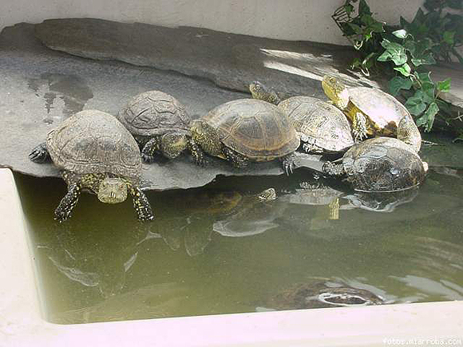
Antiguas instalaciones. Zona acu�tica.
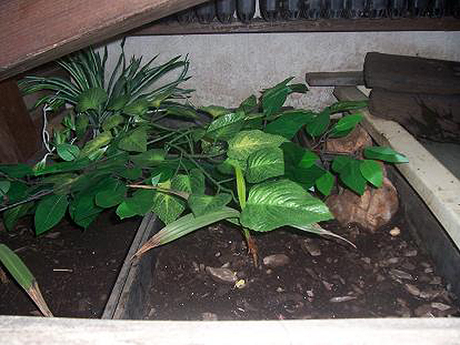
Antiguas instalaciones. Zona de puestas.
Aprovechando las �ltimas semanas del invierno me pongo manos a la
obra.
Lo primero es desmontar la vieja mesa de jard�n y toda la
instalaci�n.
Una vez despejado el patio, realizo un replanteo previo presentando
los ladrillos para dar forma f�sica a lo planeado.
Con la idea de aprovechar al m�ximo el espacio disponible, me
plante� el construir tres jardineras, una central de 3 metros de
longitud y con un ancho de 0.80 m. con un estanque central de 1.20
m. por 0.70 m. con un fondo de 0.20 m. A cada lado de esta jardinera
central dos jardineras, una de 1.50 metros por 0.80 m y otra de 1.50
m. por 1.20 m. La altura total de toda la construcci�n ser�a de 0.40
m.
La profundidad del sustrato ser� de unos 15 cent�metros, suficiente
para actividades tales como la plantaci�n, realizaci�n de puestas,
buscar refugio�
El sustrato a utilizar ser�a turba. Me decid� por �ste por su poco
peso, retenci�n de humedad, aspecto natural, f�cil disponibilidad y
precio; en este caso gratis, ya que aproveche el material de un
antiguo vivero abandonado.
El volumen de sustrato a emplear rondar� 1 m3.
Para darle un aspecto m�s natural y agradable a la instalaci�n,
busqu� un aplacado de piedra artificial para la decoraci�n del fondo
y los laterales; que a su vez facilitar� su limpieza. Para adaptar
el espacio a las medidas proyectadas retir� el rodapi�.
Una vez replanteado el espacio comenc� con el proceso de
construcci�n:
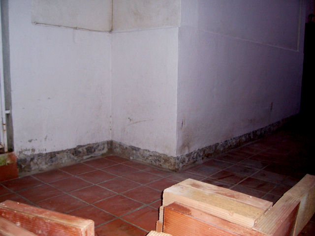
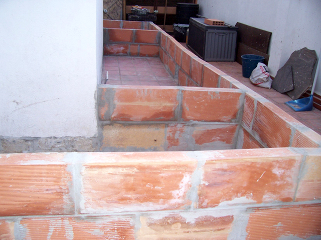
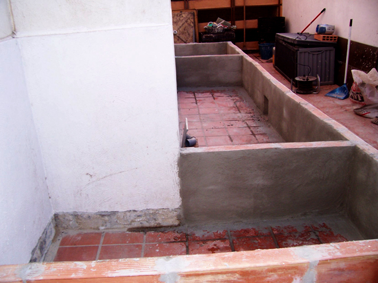
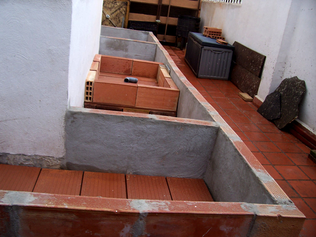
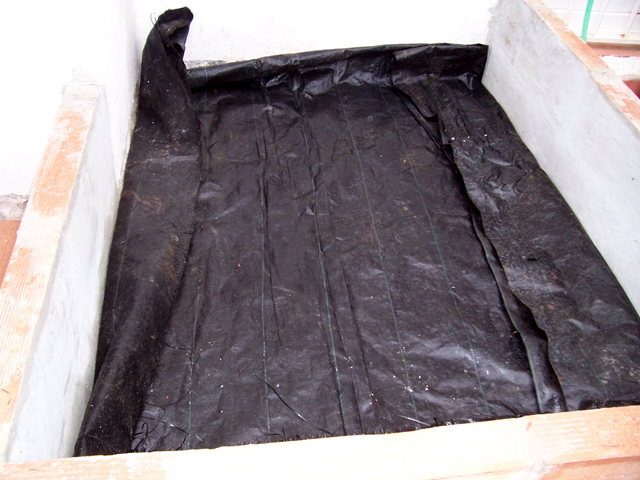
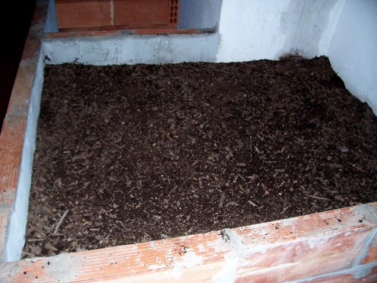
Detalles en construcci�n del estanque:
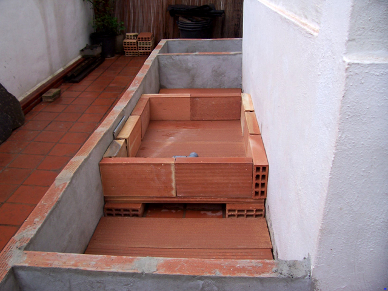
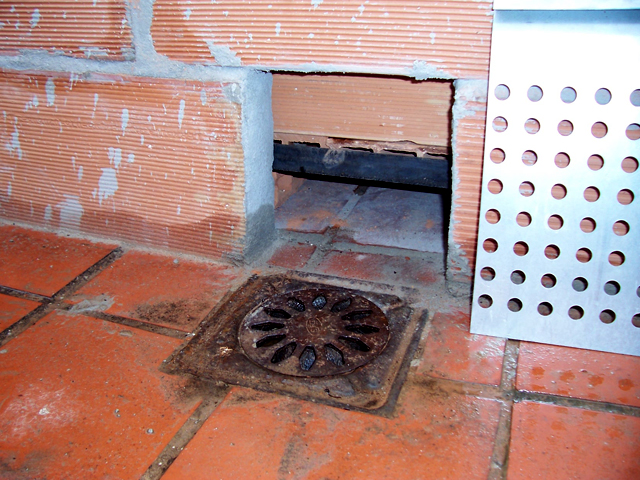
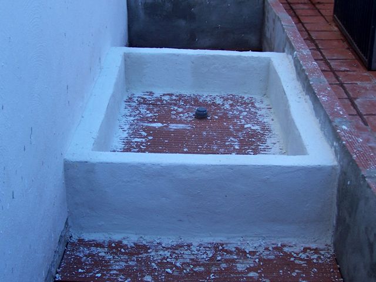

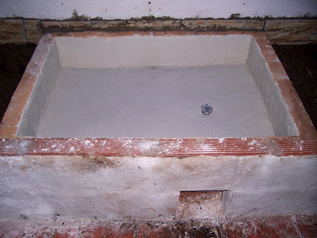
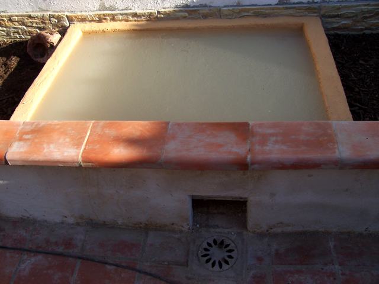
Nuevas instalaciones una vez terminadas.
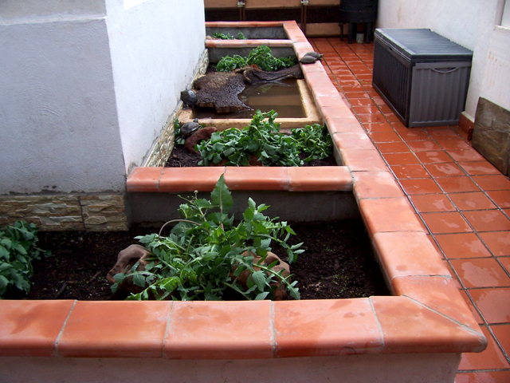
Grupo de Emys adultas.
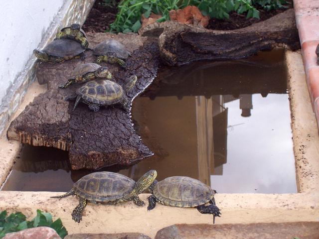
Ejemplar de Terrapene carolina nadando en el estanque.
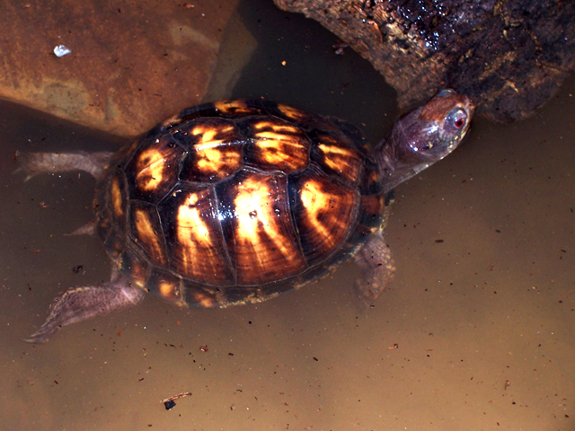
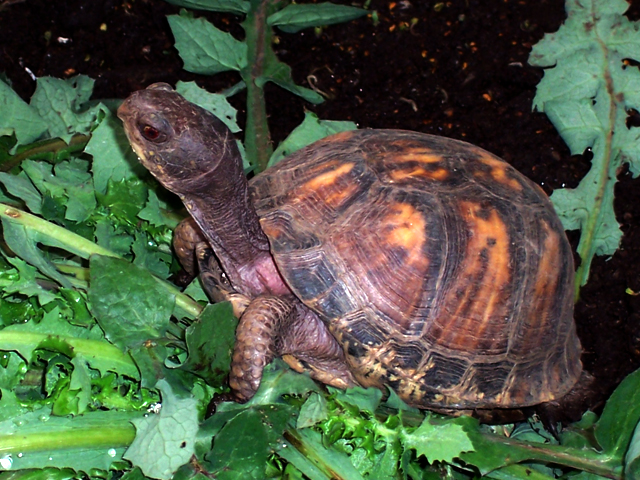
Presupuesto de ejecuci�n material.
1.- Alba�iler�a y revestimientos.
- Rasilla machihembrada de 90 X 25 X 4��16 ud�����..10,88 �
- Rasilla machihembrada de 80 X 25 X 4��12 ud�����..8,99 �
- Ladrillo hueco doble 40 X 20 X 7����50 ud����......13,05 �
- Pasamanos cer�mico 16 X 24������50 ud�����..41,00 �
- Mortero gris 25 kg�����������4 ud�����...7,78 �
- Mortero blanco 25 kg����������1 ud�����..3,50 �
- Mortero impermeable blanco 25 kg����...2 ud�����..7,98 �
- Mortero enlucido impermeabilizante 15 kg�...1 ud�����.15.95 �
- Cemento cola 25 kg�����������.1ud�����... 2,5 �
2.- Fontaner�a.
- Tap�n de P.V.C. rosca 50 mm �����.1ud������1,36 �
- Codo de 87� en P.V.C 50 mm � �...����..1ud������0,89 �
- Manguito en P.V.C. 50 mm ������..1 ud��....���0,61�
- Cola especial P.V.C�����������.1 ud������3,00�
- Silicona transparente����������....1ud������1,95�
- Rejilla met�lica�������������.1 ud������2.5 �
3.- Alicatados.
- M2 Plaqueta Piedra Artificial 45 X 15�.���1ud����....�..15 �
4.-Pinturas.
- Pintura p�trea liso 5 kg����������1ud����.��15,75 �
5.- Varios.
- M3 Sustrato turba������������..1ud�������..0 �
6.- Mano de Obra.
- Coste��������������������������.0 �
Coste Total de Ejecuci�n����������������152,69 �
Tiempo estimado de Ejecuci�n: Un mes aprovechando s�lo los
fines de semana y alguna horilla extra entre semana.
|